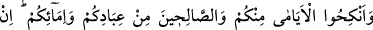
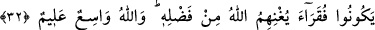
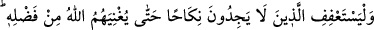
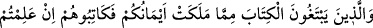
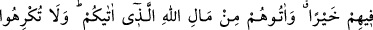
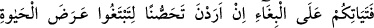
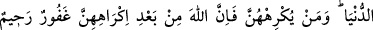
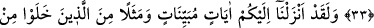
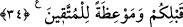

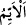
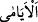
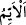
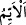
BEKÂRLARI EVLENDİRİN
32. Aranızdaki bekârları, kölelerinizden ve câriyelerinizden elverişli olanları
evlendirin. Eğer bunlar fakir iseler, Allah kendi lütfu ile onları zenginleştirir. Allah,
(lütfu) geniş olan ve (her şeyi) bilendir.
33. Evlenme imkânını bulamayanlar ise, Allah, lütfu ile kendilerini varlıklı
kılıncaya kadar iffetlerini korusunlar. Ellerinizin altında bulunanlardan (köleler ve
câriyelerden) mükâtebe yapmak isteyenlerle, eğer kendilerinde bir hayır (kabiliyet
ve güvenilirlik) görüyorsanız, hemen mükâtebe yapın. Allah’ın size vermiş olduğu
malından siz de onlara verin. Dünya hayâtının geçici menfaatlerini elde edeceksiniz
diye, namuslu kalmak isteyen câriyelerinizi fuhşa zorlamayın. Kim onları zor
altında bırakırsa, bilinmelidir ki zorlanmalarından sonra Allah (onlar için) çok
bağışlayıcı ve merhametlidir.
34. Andolsun ki biz size (gerekeni) açık açık bildiren âyetler, sizden önce yaşayıp
gitmiş olanlardan örnekler ve takvâya ulaşmış kimseler için öğütler indirdik.
“Aranızdaki bekârları” evlendirin“__WORD__ “__WORD__, kelimesinin çoğuludur. “__WORD__, ister
bekâr ister dul olsun erkeklerden ve kadınlardan zevcesi olmayan demektir. el-
Müfredât’ta der ki: “__WORD__ kocası olmayan kadın demektir. Eşi olmayan erkek için de bu
söz söylenir. Bu ise araştırıp inceleme yoluyla değil, kadına benzetme yoluyladır. Yâni
ey veliler ve efendiler, kavminiz içinde zevcesi olmayan hür erkekleri ve kocası
bulunmayan hür kadınları evlendirin. Çünkü nikâh hem neslin devamını sağlar hem de
zinânın yaygınlaşmasına mâni olur.